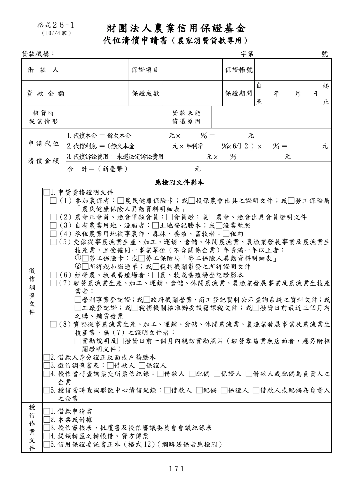

格式 26-1：代位清償申請書（農家消費貸款專用）
手冊頁：171 PDF頁：183／203

查看PDF文字層
下列文字取自PDF既有文字層，僅供搜尋、複製與無障礙輔助。複雜表格的欄列位置可能失真，正式內容請以原頁預覽或PDF為準。
財團法人 農業信用保證基金
代位清償申請書（農家消費貸款專用）
貸款機構： 字第 號
借款 人 保證項目 保證帳號
貸 款 金 額 保證成數 保證期間
自 起
年 月 日
至 止
核貸時
從業情形 貸款未能
償還原因
申請代位
清償金額
1.代償本金 ＝ 餘欠本金 元 × ％ ＝ 元
2.代償利息 ＝（餘欠本金 元 × 年利率 ％× 6/1 2 ） × ％ ＝ 元
3.代償訴訟費用 ＝未還法定訴訟費用 元 × ％ ＝ 元
合 計＝（新臺幣） 元
應檢附文件影本
徵
信
調
查
文
件
□1.申貸資格證明文件
□（1）參加農保者：□農民健康保險卡；或□投保農會出具之證明文件；或□勞工保險局
「農民健康保險人異動資料明細表」
□（2）農會正會員、漁會甲類會員：□會員證；或□農會、漁會出具會員證明文件
□（3）自有農業用地、漁船者：□土地登記謄本；或□漁業執照
□（4）承租農業用地從事農作、森林、養殖、畜牧者：□租約
□（5）受僱從事農漁業生產、加工、運銷、倉儲、休閒農漁業、農漁業發展事業及農漁業生
技產業，且受僱同一事業單位（不含關係企業）年資滿一年以上者：
□勞工保險卡；或□勞工保險局「勞工保險人異動資料明細表」
□所得稅扣繳憑單；或□稅捐機關製發之所得證明文件
□（6）經營農、牧或養殖場者：□農、牧或養殖場登記證影本
□（7）經營農漁業生產、加工、運銷、倉儲、休閒農漁業、農漁業發展事業及農漁業生技產
業者：
□營利事業登記證；或□政府機關營業、商工登記資料公示查詢系統之資料文件；或
□工廠登記證；或□稅捐機關核准辦妥設籍課稅文件；或□撥貸日前最近三個月內
之購、銷貨發票
□（8）實際從事農漁業生產、加工、運銷、倉儲、休閒農漁業、農漁業發展事業及農漁業生
技產業，無（7）之證明文件者：
□實勘說明及□撥貸日前一個月內親訪實勘照片（經營零售業無店面者，應另附相
關證明文件）
□2.借款人身分證正反面或戶籍謄本
□3.徵信調查書表：□借款人 □保證人
□4.授信當時查詢票交所票信紀錄：□借款人 □配偶 □保證人 □借款人或配偶為負責人之
企業
□5.授信當時查詢聯徵中心債信紀錄：□借款人 □配偶 □保證人 □借款人或配偶為負責人
之企業
授
信
作
業
文
件
□1.借款申請書
□2.本票或借據
□3.授信審核表、批覆書及授信審議委員會會議紀錄表
□4.提領轉匯之轉帳借、貸方傳票
□5.信用保證委託書正本（格式 12）（網路送保者應檢附）
格式２６-１
（107/4版）